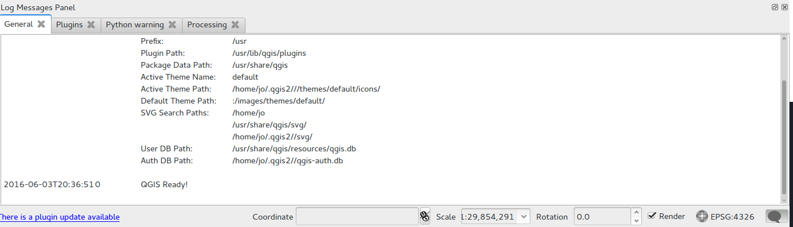

Software specifics
Web-based software
Most modern browsers now come with some form of developer console and toolkit. Examples include:
QGIS
When reporting QGIS issues it's really important to provide information on the source of your installation. For windows users, did you use the stand-alone installer or OSGeo4W? For linux users which repository did your software come from?
QGIS has a number of options for helping you debug problems including the messages panel, which logs messages for plugins as well as the main software itself. This can be activated from the bottom right corner of the main window in QGIS 2.14

Lutra Consulting have also released a plugin that helps with the bug reporting process. It's a little tricky to set up and use but extremely useful. Find it on plugins.qgis.org and instructions for use on their blog.
See the online documentation help pages for details of all the mailing lists and bug trackers.
QGIS maintains a list of companies offering commercial support- see qgis.org/en/site/forusers/commercial_support.html for details.